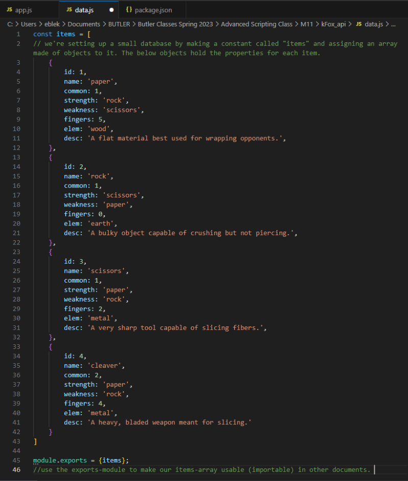
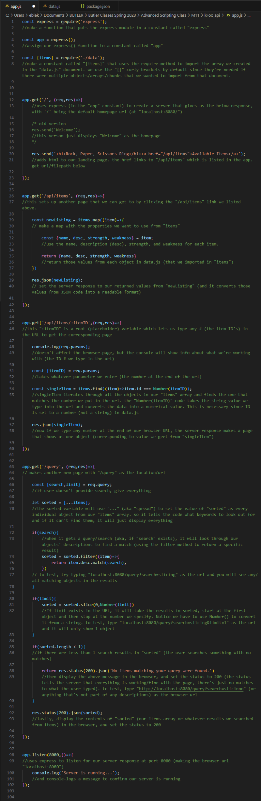
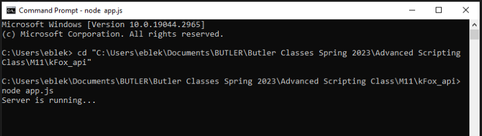
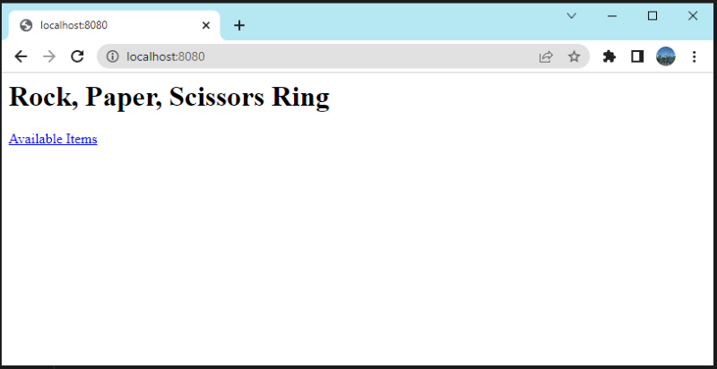
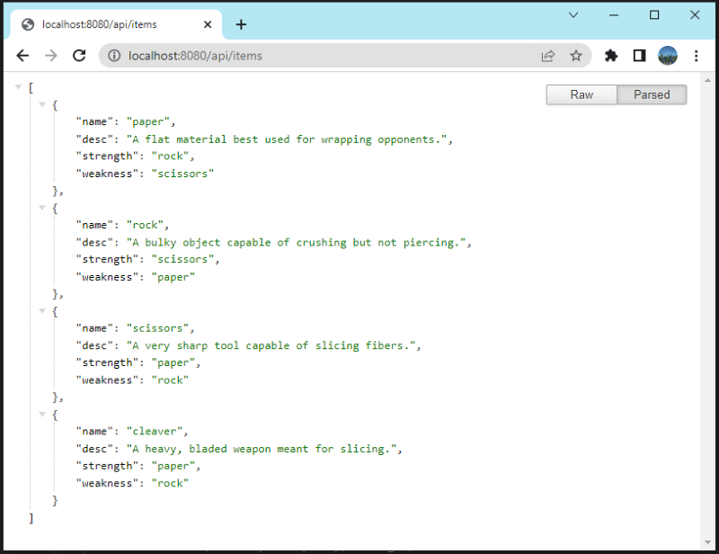
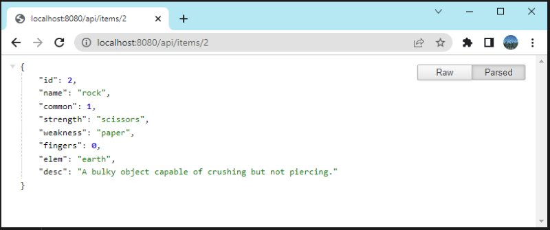
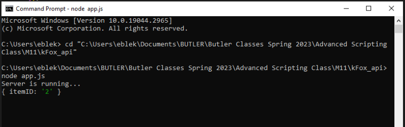
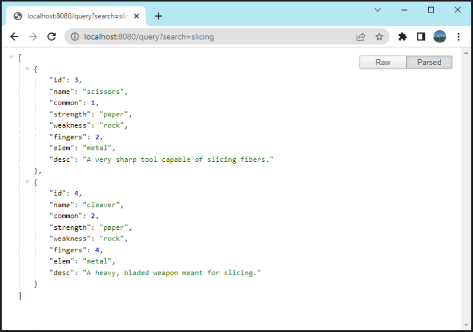
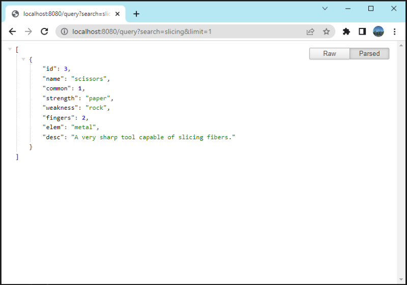
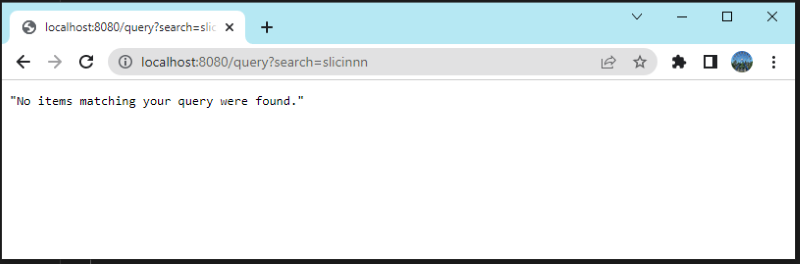

API Queries & Parameters Exercise
Sets allow us to create a collection of zero or more unique values. This means each value can only be used once in the set. To create a set use Set(). If you use optional array values in a set and any of them are duplicates, the constructor removes them. This constructor isn't the most flexible so you won't see sets too often.
JSON is a format for storing and transporting data. This is usually done by creating some combination of arrays and objects. Because the JSON format uses an identical syntax to JavaScript this makes it easier to convert the JSON to native JavaScript objects.
In this exercise, we started by making a json file called data.js. Rather than use an API made by an external source, we set up this small database ourselves. This way our API is set up so that we created a constant and assigned an array made of objects to it. The objects will hold the properties for each item.
Then we made a script called app.js. This script lets us start a server to display our API data (items). We also made a map with the properties we wanted to use from items. Then we pretended that we set up an UI that let the user filter the information. We would do that by sending a parameter through the URL. To test it practically, we wrote code that will let us type different parameters in the URL in order to filter items.
Then we can use the Console to run app.js and start the server. Once doing so, we can visit the homepage in a browser.
 We can also click the link on the homepage to view all the items in our data.js API.
We can also try typing in URL's like the ones suggested in the comments of app.js to filter the items from data.js.
When we type an item number into the url, the console.log from app.js displays accordingly.
Below we can see the results of typing the other types of parameters into the URL.
  